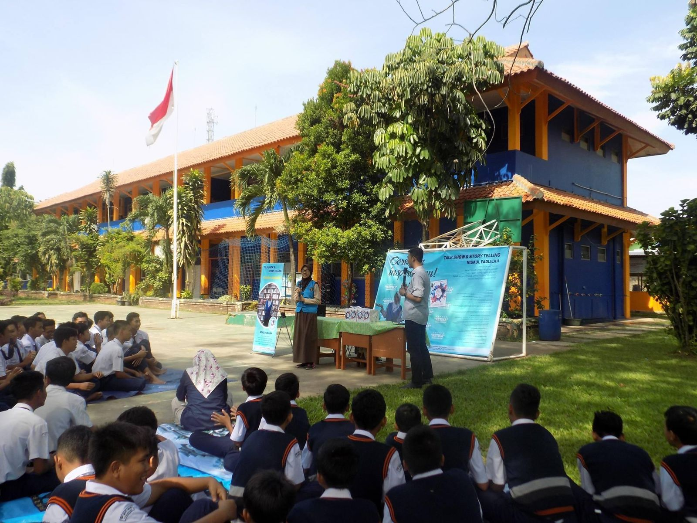
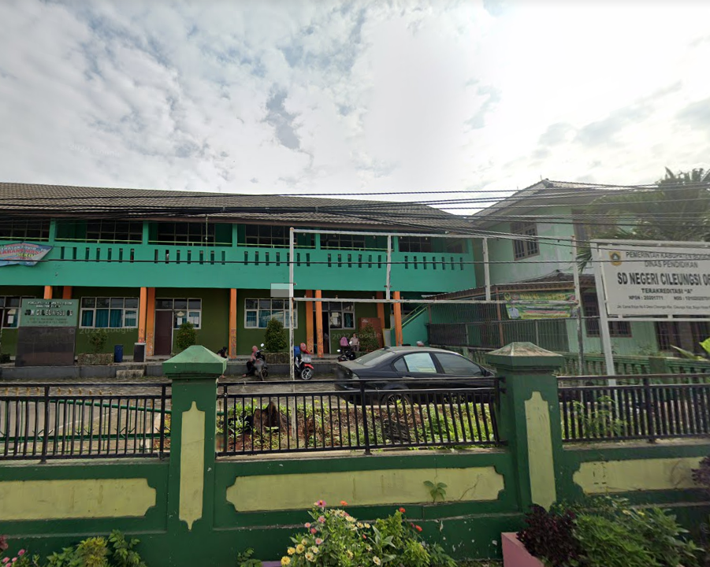

Politeknik Negeri Padang
2019 - 2022
Jurusan Teknologi Informasi
D3 Manajemen Informatika

SMAN 1
Pancung Soal
2016 - 2019
Jurusan IPA

SMP
SMP
Semen Cibinong
2013 - 2016

SDN 06
SDN 06
Cileungsi
2007 - 2013